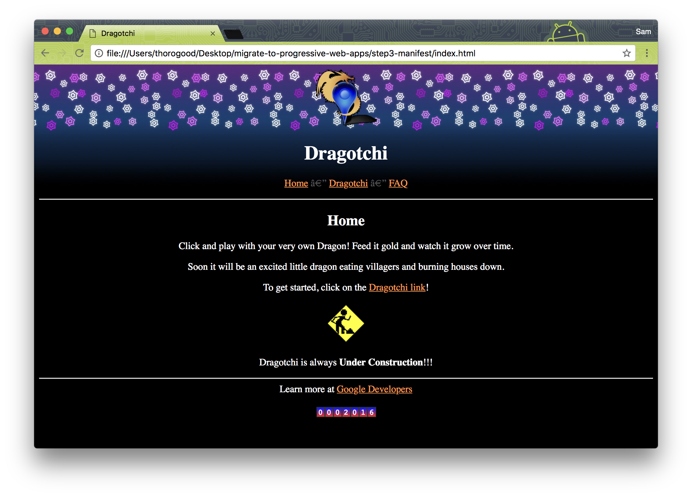
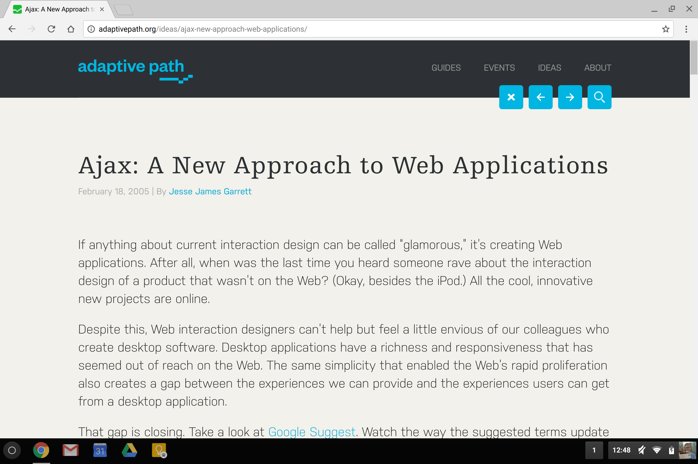
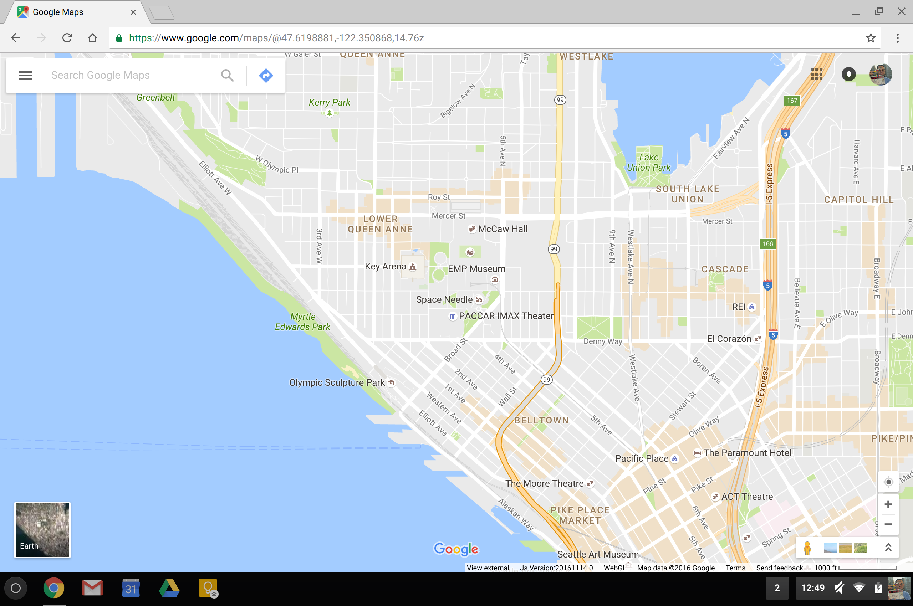
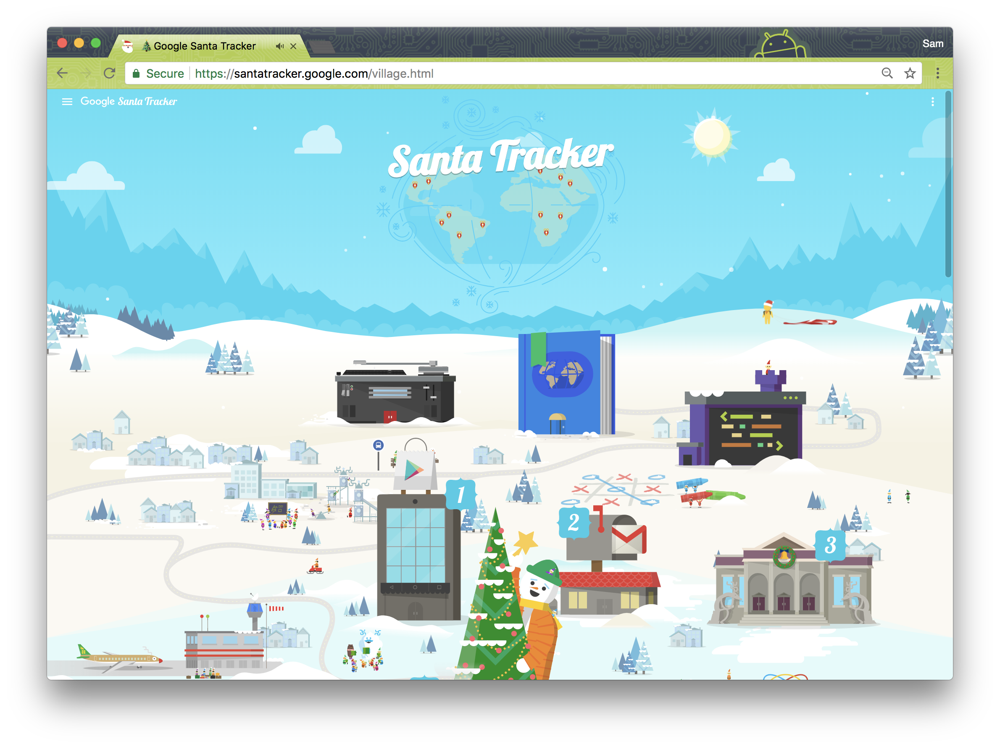
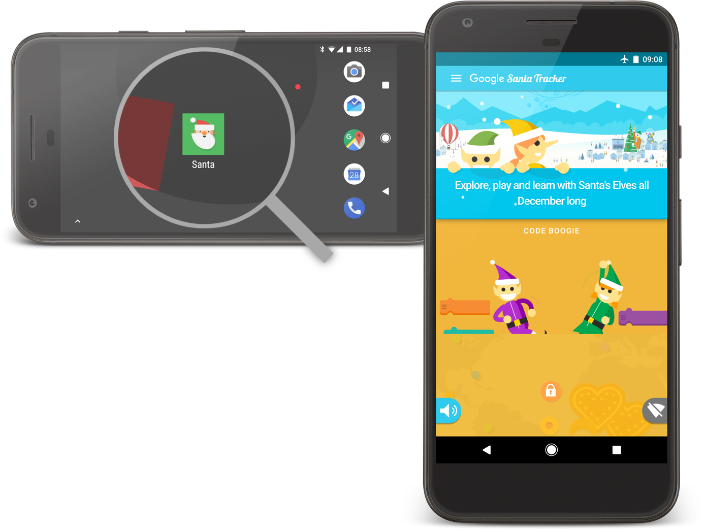

Mobile Happened
- "There's an app for that"—native capabilities have made apps sexy
- Mobile has easily overtaken desktop
ZERO
apps installed per month
…
ONE
app installed per month
78%
of time is spent in a users' top three apps
So if
- You are developing something
- ... for other humans to consume (e.g. "content")
- ... for other humans to use (e.g. "app")
The web is
- The most open platform we have
- The easiest way to share with anyone
Build Better Websites
- Capabilities have caught up with reach
- Think native APIs, performance
- Evergreen browsers provide a great base
- ... to progressively enhance your users' experience
What's Old Is New Again
- ... when rounded down, no-one wants to install your native app
- ... URLs still mean something
- ... the Web is not dead
Sam Thorogood
- Developer Programs Engineer at Google
Projects
- YouTube videos, blog posts
- Misc web polyfills—
dialog,inert - Emojityper.com
- …
Santa Tracker
Santa Tracker

Progressive Web Apps
- We just made this phrase up
- It's a conversation piece—the "other option" vs sinking $$ into an app
- Good to search for
- Web experiences with app-like features
Service Worker
- PWAs are made possible by Service Worker
- Supported on Chrome, Firefox, Edge (soon™) and Safari (soon™)
TODO: service worker diagram
🔥
Fast
Integrated
Reliable
Engaging
Fast
20-50%
of users will abandon your site after 3s loading
Integrated
- Launch from Home Screen
- Visible in task list
- ... or as a window
- Access to native hardware via APIs
Webapps? On my Home Screen?
- iOS famously pioneered then ignored this
- We say "Add to Home Screen", but really mean "prompt to ..."
Web App Manifest
{
"name": "The Web Is Dead! Long Live The Web!",
"short_name": "Web 💀👑",
"icons": [
{"src": "icon-256.png", "sizes": "256x256"}
],
"display": "standalone",
"start_url": "/",
"orientation": "landscape",
"theme_color": "#36474f",
"background_color": "#fff"
}
Web App Manifest
{
"name": "The Web Is Dead! Long Live The Web!",
"short_name": "Web 💀👑",
"icons": [
{"src": "icon-256.png", "sizes": "256x256"}
],
"display": "standalone",
"start_url": "/",
"orientation": "landscape",
"theme_color": "#36474f",
"background_color": "#fff"
}
Integrated also means
- Using modern APIs where possible
- e.g., Web Payments API, Media APIs, ...
- Not everything is here yet
Reliable: Service Worker
- We cache assets and work offline via a Service Worker
- This is a JavaScript file which:
- Has an event lifecycle, including
install,activateanddeactivate events - Can proxy any network request made by your site
- Gets automatically installed on supported browsers
Service Worker
self.addEventListener('fetch', (event) => {
if (event.request.url === `https://yoursite.com/`) {
event.respondWith(new Response(`I'm a fake index page!`));
}
});
Service Worker
self.addEventListener('install', (event) => {
event.waitUntil(
self.caches.open('lcatalk').then((cache) => {
return cache.addAll(['/', '/code.js', …]);
});
);
});
self.addEventListener('fetch', (event) => {
if (event.request.url === `https://yoursite.com/`) {
…
Strategies
- Can cache everything (simple static site)
- Can cache core HTML, assets etc, load articles at runtime (news sites)
- Cache some, indicate what's missing (wikis)
Imperative
- The Service Worker is an imperative script—it can handle requests in any way
- Via the network
- Via a cache
- By racing the two requests
- (yes, the cache on disk is sometimes slower than the network.)
- Generating a dynamic/fake response—think stub images
- It still handles HTTP requests—you can't "answer it again later", e.g., cache then (slow) network
- Maybe with liberal application of client-side JavaScript
This site works offline
Demo time!—Load the /foo handler—and open DevTools
Typical strategy
TODO: graph
Proxy vs dynamic content in JS
- Service Worker allows for an extreme approach:
- Run minimal JavaScript and allow the Service Worker to generate whole sites for you—think templating engines inside the JS
- But... you probably just want to cache static content and load the rest with JavaScript, potentially putting that into a different, normal browser cache
- TODO: put into picture
- Not everyone has support
Engaging: Push Notifications
TODO: button to trigger one, maybe on phone?
... but every site asks for it
- We're not happy either
- Please don't do this
- Acceptance rate is much, much lower than when based on a user action (e.g. button click "Notify me")